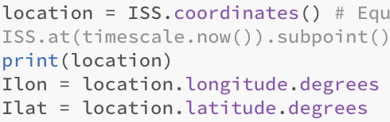

Astro-pi projekt
På denne side vil jeg forklare og gennemgå mit nye projekt omkring Atro-pi. Jeg vil forklare alt, hvad jeg har lavet og, hvordan det er blevet lavet. Jeg vil fortælle om mig og min gruppes fremgangsmåde omkring projektet.
Vores prejekt
Vi vil gerne bevise at månens afstand fra jorden er med til at påvirke tidevandet.
Vi vil bevise dette ved at tage udgangspunkt i, at den satellit, der er tættest på månen, er længere væk fra jorden end den satellit, der er længst væk fra månen, fordi den påvirkes af månen og dermed af tidevandskraften.
Vi vil bevise dette ved at tage billede fra begge satellitter og vise, at den første satellits billede er mindre end den anden satellits billede. Vi ved at, hvis et bilede er større, må det betyde at kameraet er tættere på den genstand der er taget et billede af.
ESA specifikationer
ESA specifiktioner for projektet kræver at det skal være et videnskabeligt projekt og ikke et spil, at forsøget ikke må afhænge af en specifik begivenhed og at forsøget ikke må kræve yderliger udstyr eller andet på ISS. Eftersom vores projekt undersøger et videnskabeligt fænomen, ikke afhænger af en specifik begivenhed eller kræver uderlig adgang eller udstyr på ISS, må vores projekt leve op til ESA's specifikationer.
Hvilke sensorer vi har brugt og vores testmåling
Vi brugte senseHat til at importerer data og koordinater fra ISS. Vi bruger koderne: from skyfield.api import load, import numpy as np, from numpy import sin, cos, arccos, sqrt, arcsin, from orbit import ISS. Disse koder bruges til at få adgang til python biblioteker og matematiske funktioner, som sammen med sensoren kan udregne vinklen mellem ISS og månen.

Flowchart
Billedet til venstre er et flowchart vi har lavet for vores programkode. Vi starter med boksen "start", derefter er det den næste kode kaldet "Import data fra ISS", det er den der importerer det data vi skal bruge til vores undersøgelse. Vores næste boks står for den astronomiske måde for at finde alle planeterne. Dernæst får vi koden til at give os distancen mellem de planeter vi vil undersøge, som hænger sammen med boksen nedenunder. Tilsidst får vi printet vinklerne så vi kan finde de sidste informationer vi skal bruge til at understøtte hele vores undersøgelse. Vi slutter flowchartet af med en boks kaldet "slut".
Beskrivelse af kodestumper
Billedet nedenunder beskriver ISS's lokalitionen som koordinaterne for ISS. ISS lokalition printes i form af længegrader og breddegrader.

Link
Inde i denne boks har jeg lagt et link (en fil) ind til vores programkode af vores undersøgelse kaldet Moon_pi.
Moon_pi